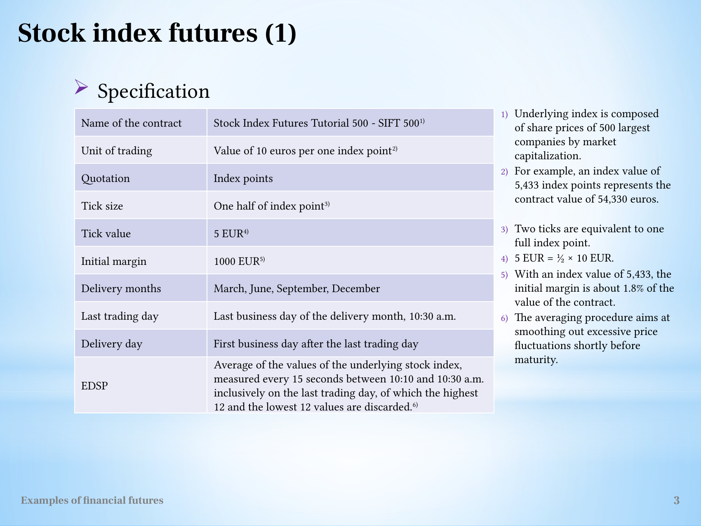
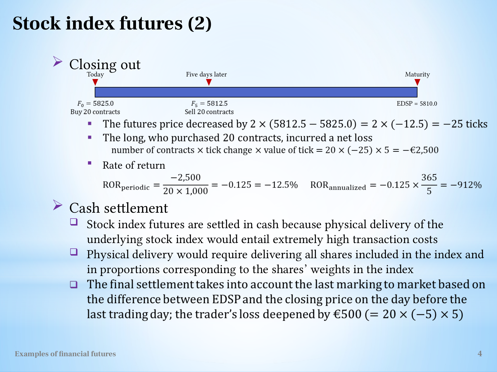

Calculate and interpret index-futures settlement and margin returns
Useful first: Convert futures quotations into payoff and conditional loss bounds
Lesson outline
- 02IntroductionSee the main question, learning objectives and prerequisites.
- 03Key definitions and conceptsGet familiar with the important terms and notation.
- 04Read the contract before calculatingA quotation alone has no monetary meaning until the unit of trading and minimum price increment are known.
- 05SIFT 500: index points become eurosThe tutorial Stock Index Futures Tutorial 500 (SIFT 500) uses an index composed of share prices of the 500 largest companies by market capitalization.
- 06Worked exampleFollow a complete application of the reasoning.
- 07Practise the reasoningWork through written tasks, with optional support and solutions.
- 08Check your reasoning: an offline quizCheck your choices and see feedback without a connection.
- 09Check your understandingReview the key distinctions and check what you can explain.
- 10Test yourself laterTry another prepared question before rereading.
- 11SourcesFind the materials and limits behind the lesson.
Introduction
In this lesson, calculate and interpret index-futures settlement and margin returns.
2.1 What you’ll learn
- Calculate a specified index-futures trade
- Distinguish close-out from held cash settlement and leveraged margin return.
2.2 Before you begin
Check the foundations
One long contract has multiplier \(10\) and rises \(3\) quote points: \(\mathrm{P/L}\) and what is not implied?
Reveal foundation explanation
\(+30\) currency units; margin/account balance needs separate funding data. Otherwise
Key definitions and concepts
- EDSP: The contract-defined final settlement reference.
- Margin return: Trading P/L divided by initial posted margin.
- Simple annualisation: Scaling a period return by a year-to-period ratio, without establishing repeatability.
Read the contract before calculating
A quotation alone has no monetary meaning until the unit of trading and minimum price increment are known. Let \(N\) be the number of contracts, \(\delta\) the tick size in quotation units and \(v\) the money value of one tick. The change from opening quotation \(F_0\) to closing quotation \(F_t\) is \((F_t-F_0)/\delta\) ticks. Thus, before fees and financing effects,
This is a unit conversion: quotation change divided by quotation units per tick, multiplied by currency per tick. The long benefits when the quotation rises. The short benefits when it falls. The lecture's index and currency calculations use the same rule, even though their quoted units and settlement currencies differ.
Margins and marking to market explains why daily transfers telescope to the opening-to-closing difference. Initial margin is a deposit supporting the position, rather than the value of the underlying asset. The tutorial return convention is
where \(M_0\) is initial margin per contract and \(d\) is the holding period in days. This convention explains the large quoted returns: the denominator is margin, not the contract's full exposure.
The annual figure linearly rescales the particular trade; it does not establish a repeatable annual investment outcome.
In calculations using this convention, subsequent margin calls, withdrawals, fees and financing are outside the displayed denominator.
SIFT 500: index points become euros
The tutorial Stock Index Futures Tutorial 500 (SIFT 500) uses an index composed of share prices of the 500 largest companies by market capitalization. Its multiplier is EUR 10 per index point.
A quote of 5,433 therefore represents EUR 54,330 of contract value. One tick is half an index point, worth \(0.5\times10=\text{EUR }5\);
two ticks are one point. Initial margin is EUR 1,000, about 1.8% of EUR 54,330 in the source's example.

Tutorial specifications and footnotes, including the multiplier and final settlement averaging rule.
Delivery months are March, June, September and December. The last trading day is the last business day of that month, at 10:30 a.m.;
delivery is the next business day. The exchange delivery settlement price (EDSP) averages underlying-index observations every 15 seconds from 10:10 through 10:30 a.m., discarding the 12 highest and 12 lowest values.
This procedure aims to smooth excessive fluctuations shortly before maturity. It defines a final settlement benchmark rather than simply using the final observed index value.
5.1 Closing after five days
The long buys 20 contracts at \(F_0=5825.0\) and sells 20 matching contracts five days later at \(F_5=5812.5\). The quotation falls by 12.5 index points, equal to \(-12.5/0.5=-25\) ticks. Therefore,
The return on opening margin is \(-2500/(20\times1000)=-12.5\%\). Simple annual scaling gives \(-0.125\times365/5=-9.125\), approximately the source's displayed \(-912\%\). A scaled return below \(-100\%\) reflects the short holding period and the chosen margin denominator; the observed five-day loss itself remains EUR 2,500.
5.2 Holding until cash settlement
Delivering every constituent share in the index's weights would create extremely high transaction costs, so the tutorial index contract settles in cash. If the position remains open, the final marking-to-market transfer compares EDSP with the previous day's closing futures quotation.
The source gives EDSP \(5810.0\) and an additional loss of \(20(-5)(5)=-\text{EUR }500\). Its arithmetic treats \(5812.5\) as that preceding settlement quotation.
This is an alternative to the five-day closing trade, not an additional payment owed after that trade has already closed the position. With the same opening quotation, the total hold-to-settlement loss is \(20(5810-5825)10=-\text{EUR }3{,}000\) (derived from the source's quotations).

The source timeline displays the closing quotation and final EDSP. Use the closing-out path and the maturity path as alternatives.
Worked example
Prompt: Hypothetical SIFT-style index contract: multiplier €10 per index point, minimum tick 0.5 point, initial margin €1000 per contract. A long 20-contract position opens at 5825;
it could close at 5812.5 after 5 days, or instead remain open to cash EDSP 5810. Compute tick value, closing signed \(\mathrm{P/L}\) and percentage return on initial margin, simple annualised closing return using 365 days, and the separate held-to-settlement total.
Explain why these are alternative paths, what EDSP does, and whether the return is an index investment yield or repeatable annual forecast. Interpret the multiplier/margin and explain the meaning of a trimmed-sample EDSP, without asserting current exchange terms.
Steps and interpretation: \(\text{One tick}=\mathrm{EUR}\,10/\text{point}\times0.5\text{ point}=\mathrm{EUR}\,5\) per contract. Closing \(G=20\times 10\times (5812.5-5825)=\mathrm{EUR}\,-2500\);
initial deposited margin €20000, so return -12.5%, annualised -912.5% by simple scaling. Held \(G=20\times 10\times (5810-5825)=\mathrm{EUR}\,-3000\);
this alternative includes the whole opening-to-EDSP move, not the already-closed trade plus settlement. A cash-settled contract pays a difference using EDSP, not delivery of index stocks.
EDSP is a rule-defined sample benchmark (the finished-note example trims extreme samples), not any chosen last quote. Multiplier scales exposure;
margin is collateral, not index notional. Margin leverage/simple annualisation does not establish an underlying yield or a repeatable forecast.
These given specification values are pedagogical, not current market terms.
Practise the reasoning
Write your reasoning before revealing an explanation. Begin with support, then apply the ideas to another situation.
7.1 Written exercise 1
Hypothetical SIFT-style index contract: multiplier €10 per index point, minimum tick 0.5 point, initial margin €1000 per contract.
Solve the following:
- A long 3-contract position opens at 2000;
- it could close at 2004 after 8 days, or instead remain open to cash EDSP 2001.
- Compute tick value, closing signed \(\mathrm{P/L}\) and percentage return on initial margin, simple annualised closing return using 365 days, and the separate held-to-settlement total.
- Explain why these are alternative paths, what EDSP does, and whether the return is an index investment yield or repeatable annual forecast.
- Interpret the multiplier/margin and explain the meaning of a trimmed-sample EDSP, without asserting current exchange terms.
Show a hint
Pause before calculating or choosing an explanation:
- What quantities, actors or outcomes are being compared? Write their roles, units and dates beside them.
- Which condition decides whether the relationship applies? Check the relevant definition before using a formula or classifying the case.
- What would have to remain fixed for your comparison to be meaningful? Work through one link in the reasoning at a time.
- How could you check the direction, boundary case or alternative explanation before stating your conclusion?
A local draft for your own study.
Reveal explanation
Key: \(\text{One tick}=\mathrm{EUR}\,10/\text{point}\times0.5\text{ point}=\mathrm{EUR}\,5\) per contract. Closing \(G=3\times 10\times (2004-2000)=\mathrm{EUR}\,120\);
initial deposited margin €3000, so return 4%, annualised 182.5% by simple scaling. Held \(G=3\times 10\times (2001-2000)=\mathrm{EUR}\,30\);
this alternative includes the whole opening-to-EDSP move, not the already-closed trade plus settlement. A cash-settled contract pays a difference using EDSP, not delivery of index stocks.
EDSP is a rule-defined sample benchmark (the finished-note example trims extreme samples), not any chosen last quote. Multiplier scales exposure;
margin is collateral, not index notional. Margin leverage/simple annualisation does not establish an underlying yield or a repeatable forecast.
These given specification values are pedagogical, not current market terms.
7.2 Written exercise 2
Hypothetical SIFT-style index contract: multiplier €10 per index point, minimum tick 0.5 point, initial margin €1000 per contract.
Solve the following:
- A long 7-contract position opens at 4200;
- it could close at 4193 after 10 days, or instead remain open to cash EDSP 4196.
- Compute tick value, closing signed \(\mathrm{P/L}\) and percentage return on initial margin, simple annualised closing return using 365 days, and the separate held-to-settlement total.
- Explain why these are alternative paths, what EDSP does, and whether the return is an index investment yield or repeatable annual forecast.
- Interpret the multiplier/margin and explain the meaning of a trimmed-sample EDSP, without asserting current exchange terms.
A local draft for your own study.
Reveal explanation
Explanation: \(\text{One tick}=\mathrm{EUR}\,10/\text{point}\times0.5\text{ point}=\mathrm{EUR}\,5\) per contract. Closing \(G=7\times 10\times (4193-4200)=\mathrm{EUR}\,-490\);
initial deposited margin €7000, so return -7%, annualised -255.5% by simple scaling. Held \(G=7\times 10\times (4196-4200)=\mathrm{EUR}\,-280\);
this alternative includes the whole opening-to-EDSP move, not the already-closed trade plus settlement. A cash-settled contract pays a difference using EDSP, not delivery of index stocks.
EDSP is a rule-defined sample benchmark (the finished-note example trims extreme samples), not any chosen last quote. Multiplier scales exposure;
margin is collateral, not index notional. Margin leverage/simple annualisation does not establish an underlying yield or a repeatable forecast.
These given specification values are pedagogical, not current market terms. All components are required.
7.3 Written exercise 3
Hypothetical SIFT-style index contract: multiplier €10 per index point, minimum tick 0.5 point, initial margin €1000 per contract.
Solve the following:
- A long 4-contract position opens at 3500;
- it could close at 3512 after 12 days, or instead remain open to cash EDSP 3508.
- Compute tick value, closing signed \(\mathrm{P/L}\) and percentage return on initial margin, simple annualised closing return using 365 days, and the separate held-to-settlement total.
- Explain why these are alternative paths, what EDSP does, and whether the return is an index investment yield or repeatable annual forecast.
- Interpret the multiplier/margin and explain the meaning of a trimmed-sample EDSP, without asserting current exchange terms.
A local draft for your own study.
Reveal explanation
Explanation: \(\text{One tick}=\mathrm{EUR}\,10/\text{point}\times0.5\text{ point}=\mathrm{EUR}\,5\) per contract. Closing \(G=4\times 10\times (3512-3500)=\mathrm{EUR}\,480\);
initial deposited margin €4000, so return 12%, annualised 365% by simple scaling. Held \(G=4\times 10\times (3508-3500)=\mathrm{EUR}\,320\);
this alternative includes the whole opening-to-EDSP move, not the already-closed trade plus settlement. A cash-settled contract pays a difference using EDSP, not delivery of index stocks.
EDSP is a rule-defined sample benchmark (the finished-note example trims extreme samples), not any chosen last quote. Multiplier scales exposure;
margin is collateral, not index notional. Margin leverage/simple annualisation does not establish an underlying yield or a repeatable forecast.
These given specification values are pedagogical, not current market terms. All components are required.
7.4 Another chance to practise
Fresh narrow check: long \(2\), multiplier \(10\), opening \(100\), early close \(101\) or instead EDSP \(99\).
Solve the following:
- Is total gain \(0\)?
- Explain.
A local draft for your own study.
Reveal explanation
No. Closed branch \(+20\); separately held branch \(-20\). They are alternatives, not additive outcomes.
Check your reasoning: an offline quiz
Choose one answer per question. Check individual answers or check the whole quiz. Each option includes feedback on the reasoning, and everything works offline.
Reveal explanation
\(20\times 10\times (5812.5-5825)=-2,500\).
Reveal explanation
Use total margin €20,000 as denominator; index notional is a different base.
Reveal explanation
The held path uses the entire opening-to-EDSP difference and cash settlement; mutually exclusive paths cannot be added.
Check your understanding
An answer adding two terminal payoffs suggests endpoint confusion. Draw a fork at opening: one branch closes, the other holds. A very large annualised figure can be arithmetically correct but its base is collateral and its repeated-return assumption unjustified.
- Calculate a specified index-futures trade
- Distinguish close-out from held cash settlement and leveraged margin return.
Test yourself later
Return to these questions after a break, before rereading the explanation. Use a question you have not just viewed.
10.1 Review question 1
Hypothetical SIFT-style index contract: multiplier €10 per index point, minimum tick 0.5 point, initial margin €1000 per contract.
Solve the following:
- A long 6-contract position opens at 2600;
- it could close at 2605 after 15 days, or instead remain open to cash EDSP 2609.
- Compute tick value, closing signed \(\mathrm{P/L}\) and percentage return on initial margin, simple annualised closing return using 365 days, and the separate held-to-settlement total.
- Explain why these are alternative paths, what EDSP does, and whether the return is an index investment yield or repeatable annual forecast.
- Interpret the multiplier/margin and explain the meaning of a trimmed-sample EDSP, without asserting current exchange terms.
A local draft for your own study.
Reveal explanation
Explanation: \(\text{One tick}=\mathrm{EUR}\,10/\text{point}\times0.5\text{ point}=\mathrm{EUR}\,5\) per contract. Closing \(G=6\times 10\times (2605-2600)=\mathrm{EUR}\,300\);
initial deposited margin €6000, so return 5%, annualised 121.667% by simple scaling. Held \(G=6\times 10\times (2609-2600)=\mathrm{EUR}\,540\);
this alternative includes the whole opening-to-EDSP move, not the already-closed trade plus settlement. A cash-settled contract pays a difference using EDSP, not delivery of index stocks.
EDSP is a rule-defined sample benchmark (the finished-note example trims extreme samples), not any chosen last quote. Multiplier scales exposure;
margin is collateral, not index notional. Margin leverage/simple annualisation does not establish an underlying yield or a repeatable forecast.
These given specification values are pedagogical, not current market terms. All components are required.
10.2 Review question 2
Hypothetical SIFT-style index contract: multiplier €10 per index point, minimum tick 0.5 point, initial margin €1000 per contract.
Solve the following:
- A long 9-contract position opens at 5100;
- it could close at 5098 after 9 days, or instead remain open to cash EDSP 5095.
- Compute tick value, closing signed \(\mathrm{P/L}\) and percentage return on initial margin, simple annualised closing return using 365 days, and the separate held-to-settlement total.
- Explain why these are alternative paths, what EDSP does, and whether the return is an index investment yield or repeatable annual forecast.
- Interpret the multiplier/margin and explain the meaning of a trimmed-sample EDSP, without asserting current exchange terms.
A local draft for your own study.
Reveal explanation
Explanation: \(\text{One tick}=\mathrm{EUR}\,10/\text{point}\times0.5\text{ point}=\mathrm{EUR}\,5\) per contract. Closing \(G=9\times 10\times (5098-5100)=\mathrm{EUR}\,-180\);
initial deposited margin €9000, so return -2%, annualised -81.1111% by simple scaling. Held \(G=9\times 10\times (5095-5100)=\mathrm{EUR}\,-450\);
this alternative includes the whole opening-to-EDSP move, not the already-closed trade plus settlement. A cash-settled contract pays a difference using EDSP, not delivery of index stocks.
EDSP is a rule-defined sample benchmark (the finished-note example trims extreme samples), not any chosen last quote. Multiplier scales exposure;
margin is collateral, not index notional. Margin leverage/simple annualisation does not establish an underlying yield or a repeatable forecast.
These given specification values are pedagogical, not current market terms. All components are required.
Sources
Show materials and lesson scope
- L11(ExamplesOfFinancialFutures).pptx, slide 4
- L11(ExamplesOfFinancialFutures).pptx, slide 6
- L11(ExamplesOfFinancialFutures).pptx, slide 3
Numerical and contextual illustrations are hypothetical unless explicitly described as a reported result. Historical data, model assumptions and unresolved source differences retain their stated limits.
These exercises are for self-study. Viewing a prepared item or solution may make that item unsuitable as a fresh check in a tutor chat. This page does not record an assessed learning result.